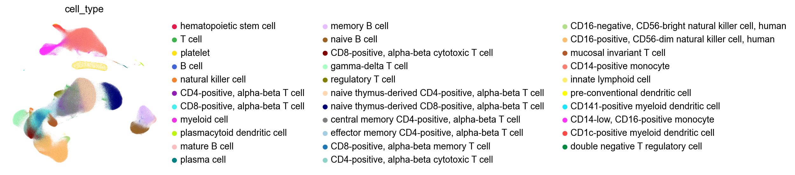
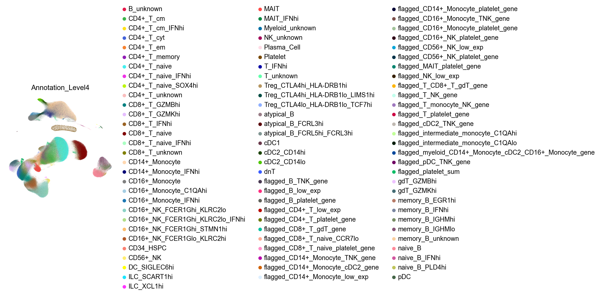
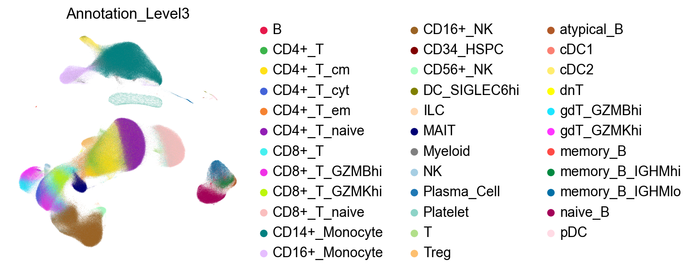
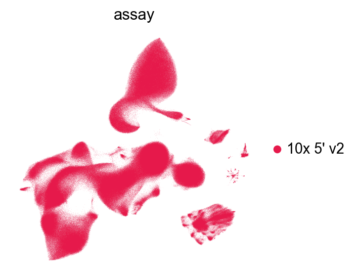
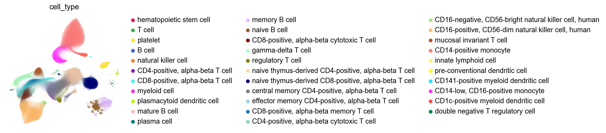

Running INFOG and GDR on one million cells#
Load basic settings#
[1]:
import numpy as np
import pandas as pd
import scanpy as sc
sc.set_figure_params(dpi=80,dpi_save=300, color_map='viridis',facecolor='white')
from matplotlib import rcParams
# To modify the default figure size, use rcParams.
rcParams['figure.figsize'] = 4, 4
rcParams['font.sans-serif'] = "Arial"
rcParams['font.family'] = "Arial"
sc.settings.verbosity = 3
sc.logging.print_header()
/tmp/ipykernel_884065/1353975569.py:11: RuntimeWarning: Failed to import dependencies for application/vnd.jupyter.widget-view+json representation. (ModuleNotFoundError: No module named 'ipywidgets')
sc.logging.print_header()
[1]:
| Component | Info |
|---|---|
| Python | 3.10.18 (main, Jun 5 2025, 13:14:17) [GCC 11.2.0] |
| OS | Linux-5.14.0-611.11.1.el9_7.x86_64-x86_64-with-glibc2.34 |
| CPU | 96 logical CPU cores, x86_64 |
| GPU | No GPU found |
| Updated | 2025-12-16 04:14 |
Dependencies
| Dependency | Version |
|---|---|
| cycler | 0.12.1 |
| matplotlib-inline | 0.1.7 |
| jedi | 0.19.2 |
| natsort | 8.4.0 |
| ipython | 8.37.0 |
| pillow | 11.2.1 |
| executing | 2.2.0 |
| leidenalg | 0.10.2 |
| llvmlite | 0.44.0 |
| pytz | 2025.2 |
| joblib | 1.5.1 |
| prompt_toolkit | 3.0.51 |
| decorator | 5.2.1 |
| stack-data | 0.6.3 |
| wcwidth | 0.2.13 |
| igraph | 0.11.9 |
| parso | 0.8.4 |
| debugpy | 1.8.14 |
| python-dateutil | 2.9.0.post0 |
| six | 1.17.0 |
| texttable | 1.7.0 |
| psutil | 7.0.0 |
| asttokens | 3.0.0 |
| Cython | 3.1.4 |
| h5py | 3.14.0 |
| numba | 0.61.2 |
| pure_eval | 0.2.3 |
| kiwisolver | 1.4.8 |
| setuptools | 78.1.1 |
| tornado | 6.5.1 |
Copyable Markdown
| Dependency | Version | | ----------------- | ----------- | | cycler | 0.12.1 | | matplotlib-inline | 0.1.7 | | jedi | 0.19.2 | | natsort | 8.4.0 | | ipython | 8.37.0 | | pillow | 11.2.1 | | executing | 2.2.0 | | leidenalg | 0.10.2 | | llvmlite | 0.44.0 | | pytz | 2025.2 | | joblib | 1.5.1 | | prompt_toolkit | 3.0.51 | | decorator | 5.2.1 | | stack-data | 0.6.3 | | wcwidth | 0.2.13 | | igraph | 0.11.9 | | parso | 0.8.4 | | debugpy | 1.8.14 | | python-dateutil | 2.9.0.post0 | | six | 1.17.0 | | texttable | 1.7.0 | | psutil | 7.0.0 | | asttokens | 3.0.0 | | Cython | 3.1.4 | | h5py | 3.14.0 | | numba | 0.61.2 | | pure_eval | 0.2.3 | | kiwisolver | 1.4.8 | | setuptools | 78.1.1 | | tornado | 6.5.1 | | Component | Info | | --------- | -------------------------------------------------------- | | Python | 3.10.18 (main, Jun 5 2025, 13:14:17) [GCC 11.2.0] | | OS | Linux-5.14.0-611.11.1.el9_7.x86_64-x86_64-with-glibc2.34 | | CPU | 96 logical CPU cores, x86_64 | | GPU | No GPU found | | Updated | 2025-12-16 04:14 |
Setting paths#
[4]:
save_dir='/n/scratch/users/m/mid166/Result/single-cell/Methods/DataProcessing/AsianImmuneDiversityAtlasPhase1v2'
sc.settings.figdir = save_dir
prefix='AsianImmuneDiversityAtlasPhase1v2'
import os
if not os.path.exists(save_dir):
os.makedirs(save_dir)
sc.set_figure_params(dpi=80,dpi_save=300, color_map='viridis',facecolor='white')
rcParams['figure.figsize'] = 4, 4
Load the data#
The data is from Asian diversity in human immune cells Kock, Kian Hong et al. Cell, Volume 188, Issue 8, 2288 - 2306.e24.
cd /n/scratch/users/m/mid166/Result/single-cell/Methods/DataProcessing/AsianImmuneDiversityAtlasPhase1v2
wget https://datasets.cellxgene.cziscience.com/9deda9ad-6a71-401e-b909-5263919d85f9.h5ad
mv 9deda9ad-6a71-401e-b909-5263919d85f9.h5ad AsianImmuneDiversityAtlasPhase1v2.h5ad
[5]:
adata=sc.read('/n/scratch/users/m/mid166/Result/single-cell/Methods/DataProcessing/AsianImmuneDiversityAtlasPhase1v2/AsianImmuneDiversityAtlasPhase1v2.h5ad')
[6]:
adata
[6]:
AnnData object with n_obs × n_vars = 1265624 × 35477
obs: 'reference_genome', 'gene_annotation_version', 'alignment_software', 'intronic_reads_counted', 'library_id', 'assay_ontology_term_id', 'sequenced_fragment', 'cell_number_loaded', 'institute', 'is_primary_data', 'cell_type_ontology_term_id', 'author_cell_type', 'sample_id', 'sample_preservation_method', 'tissue_ontology_term_id', 'development_stage_ontology_term_id', 'sample_collection_method', 'donor_BMI_at_collection', 'tissue_type', 'suspension_derivation_process', 'suspension_enriched_cell_types', 'cell_viability_percentage', 'suspension_uuid', 'suspension_type', 'donor_id', 'self_reported_ethnicity_ontology_term_id', 'donor_living_at_sample_collection', 'disease_ontology_term_id', 'sex_ontology_term_id', 'nCount_RNA', 'nFeature_RNA', 'pMito', 'NODG', 'nUMI', 'Country', 'Annotation_Level1', 'Annotation_Level2', 'Annotation_Level3', 'Annotation_Level4', 'Smoking Status', 'cell_type', 'assay', 'disease', 'sex', 'tissue', 'self_reported_ethnicity', 'development_stage', 'observation_joinid'
var: 'feature_is_filtered', 'feature_name', 'feature_reference', 'feature_biotype', 'feature_length', 'feature_type'
uns: 'citation', 'default_embedding', 'organism', 'organism_ontology_term_id', 'schema_reference', 'schema_version', 'title'
obsm: 'X_umap'
Change the adata.var to gene symbols#
[10]:
adata.var.head()
[10]:
| feature_is_filtered | feature_name | feature_reference | feature_biotype | feature_length | feature_type | |
|---|---|---|---|---|---|---|
| ENSG00000000003 | False | TSPAN6 | NCBITaxon:9606 | gene | 2396 | protein_coding |
| ENSG00000000005 | False | TNMD | NCBITaxon:9606 | gene | 873 | protein_coding |
| ENSG00000000419 | False | DPM1 | NCBITaxon:9606 | gene | 1262 | protein_coding |
| ENSG00000000457 | False | SCYL3 | NCBITaxon:9606 | gene | 2916 | protein_coding |
| ENSG00000000460 | False | FIRRM | NCBITaxon:9606 | gene | 2661 | protein_coding |
[12]:
adata.var['Ensemble_ID']=adata.var_names.copy()
[13]:
adata.var_names=adata.var['feature_name'].values.astype(str).copy()
[14]:
adata.var.head()
[14]:
| feature_is_filtered | feature_name | feature_reference | feature_biotype | feature_length | feature_type | Ensemble_ID | |
|---|---|---|---|---|---|---|---|
| TSPAN6 | False | TSPAN6 | NCBITaxon:9606 | gene | 2396 | protein_coding | ENSG00000000003 |
| TNMD | False | TNMD | NCBITaxon:9606 | gene | 873 | protein_coding | ENSG00000000005 |
| DPM1 | False | DPM1 | NCBITaxon:9606 | gene | 1262 | protein_coding | ENSG00000000419 |
| SCYL3 | False | SCYL3 | NCBITaxon:9606 | gene | 2916 | protein_coding | ENSG00000000457 |
| FIRRM | False | FIRRM | NCBITaxon:9606 | gene | 2661 | protein_coding | ENSG00000000460 |
[ ]:
adata.var.tail(30)
| feature_is_filtered | feature_name | feature_reference | feature_biotype | feature_length | feature_type | Ensemble_ID | |
|---|---|---|---|---|---|---|---|
| ENSG00000288096 | False | ENSG00000288096 | NCBITaxon:9606 | gene | 2075 | lncRNA | ENSG00000288096 |
| ENSG00000288097 | False | ENSG00000288097 | NCBITaxon:9606 | gene | 2264 | lncRNA | ENSG00000288097 |
| ENSG00000288098 | False | ENSG00000288098 | NCBITaxon:9606 | gene | 653 | lncRNA | ENSG00000288098 |
| ENSG00000288099 | False | ENSG00000288099 | NCBITaxon:9606 | gene | 611 | lncRNA | ENSG00000288099 |
| ENSG00000288100 | False | ENSG00000288100 | NCBITaxon:9606 | gene | 1676 | lncRNA | ENSG00000288100 |
| ENSG00000288102 | False | ENSG00000288102 | NCBITaxon:9606 | gene | 872 | lncRNA | ENSG00000288102 |
| ENSG00000288103 | False | ENSG00000288103 | NCBITaxon:9606 | gene | 795 | lncRNA | ENSG00000288103 |
| ENSG00000288104 | False | ENSG00000288104 | NCBITaxon:9606 | gene | 2196 | lncRNA | ENSG00000288104 |
| ENSG00000288105 | False | ENSG00000288105 | NCBITaxon:9606 | gene | 1131 | lncRNA | ENSG00000288105 |
| ENSG00000288106 | False | ENSG00000288106 | NCBITaxon:9606 | gene | 1301 | lncRNA | ENSG00000288106 |
| ENSG00000288107 | False | ENSG00000288107 | NCBITaxon:9606 | gene | 2800 | lncRNA | ENSG00000288107 |
| ENSG00000288108 | False | ENSG00000288108 | NCBITaxon:9606 | gene | 509 | lncRNA | ENSG00000288108 |
| ENSG00000288109 | False | ENSG00000288109 | NCBITaxon:9606 | gene | 669 | lncRNA | ENSG00000288109 |
| ENSG00000288110 | False | ENSG00000288110 | NCBITaxon:9606 | gene | 2417 | lncRNA | ENSG00000288110 |
| ENSG00000288156 | False | ENSG00000288156 | NCBITaxon:9606 | gene | 2609 | lncRNA | ENSG00000288156 |
| ENSG00000288162 | False | ENSG00000288162 | NCBITaxon:9606 | gene | 1636 | lncRNA | ENSG00000288162 |
| ENSG00000288172 | False | ENSG00000288172 | NCBITaxon:9606 | gene | 1438 | lncRNA | ENSG00000288172 |
| ENSG00000288187 | False | ENSG00000288187 | NCBITaxon:9606 | gene | 1408 | lncRNA | ENSG00000288187 |
| ENSG00000288234 | False | ENSG00000288234 | NCBITaxon:9606 | gene | 812 | lncRNA | ENSG00000288234 |
| FAM106C | False | FAM106C | NCBITaxon:9606 | gene | 1623 | lncRNA | ENSG00000288235 |
| ENSG00000288245 | False | ENSG00000288245 | NCBITaxon:9606 | gene | 1317 | lncRNA | ENSG00000288245 |
| ENSG00000288252 | False | ENSG00000288252 | NCBITaxon:9606 | gene | 512 | lncRNA | ENSG00000288252 |
| ENSG00000288253 | False | ENSG00000288253 | NCBITaxon:9606 | gene | 615 | lncRNA | ENSG00000288253 |
| ENSG00000288300 | False | ENSG00000288300 | NCBITaxon:9606 | gene | 1622 | lncRNA | ENSG00000288300 |
| ENSG00000288302 | False | ENSG00000288302 | NCBITaxon:9606 | gene | 629 | lncRNA | ENSG00000288302 |
| ENSG00000288321 | False | ENSG00000288321 | NCBITaxon:9606 | gene | 478 | lncRNA | ENSG00000288321 |
| ENSG00000288330 | False | ENSG00000288330 | NCBITaxon:9606 | gene | 1601 | TEC | ENSG00000288330 |
| ENSG00000288398 | False | ENSG00000288398 | NCBITaxon:9606 | gene | 2662 | lncRNA | ENSG00000288398 |
| ENSG00000288459 | False | ENSG00000288459 | NCBITaxon:9606 | gene | 944 | lncRNA | ENSG00000288459 |
| SMIM42 | False | SMIM42 | NCBITaxon:9606 | gene | 1015 | protein_coding | ENSG00000288460 |
[20]:
adata.var_names=[np.str_.split(i, '_ENSG')[0] for i in adata.var_names]
[21]:
adata.var_names_make_unique()
[22]:
adata.var.head()
[22]:
| feature_is_filtered | feature_name | feature_reference | feature_biotype | feature_length | feature_type | Ensemble_ID | |
|---|---|---|---|---|---|---|---|
| TSPAN6 | False | TSPAN6 | NCBITaxon:9606 | gene | 2396 | protein_coding | ENSG00000000003 |
| TNMD | False | TNMD | NCBITaxon:9606 | gene | 873 | protein_coding | ENSG00000000005 |
| DPM1 | False | DPM1 | NCBITaxon:9606 | gene | 1262 | protein_coding | ENSG00000000419 |
| SCYL3 | False | SCYL3 | NCBITaxon:9606 | gene | 2916 | protein_coding | ENSG00000000457 |
| FIRRM | False | FIRRM | NCBITaxon:9606 | gene | 2661 | protein_coding | ENSG00000000460 |
Set up the raw UMI counts layer#
[15]:
adata.raw.X.data
[15]:
array([1., 1., 1., ..., 2., 1., 1.], shape=(2545339623,), dtype=float32)
[16]:
adata.layers['raw']=adata.raw.X.copy()
[17]:
del adata.raw
[18]:
adata.X.data
[18]:
array([1.21232039, 1.21232039, 1.21232039, ..., 2.99794589, 1.82356588,
3.96914141], shape=(2544339517,))
[23]:
adata
[23]:
AnnData object with n_obs × n_vars = 1265624 × 35477
obs: 'reference_genome', 'gene_annotation_version', 'alignment_software', 'intronic_reads_counted', 'library_id', 'assay_ontology_term_id', 'sequenced_fragment', 'cell_number_loaded', 'institute', 'is_primary_data', 'cell_type_ontology_term_id', 'author_cell_type', 'sample_id', 'sample_preservation_method', 'tissue_ontology_term_id', 'development_stage_ontology_term_id', 'sample_collection_method', 'donor_BMI_at_collection', 'tissue_type', 'suspension_derivation_process', 'suspension_enriched_cell_types', 'cell_viability_percentage', 'suspension_uuid', 'suspension_type', 'donor_id', 'self_reported_ethnicity_ontology_term_id', 'donor_living_at_sample_collection', 'disease_ontology_term_id', 'sex_ontology_term_id', 'nCount_RNA', 'nFeature_RNA', 'pMito', 'NODG', 'nUMI', 'Country', 'Annotation_Level1', 'Annotation_Level2', 'Annotation_Level3', 'Annotation_Level4', 'Smoking Status', 'cell_type', 'assay', 'disease', 'sex', 'tissue', 'self_reported_ethnicity', 'development_stage', 'observation_joinid'
var: 'feature_is_filtered', 'feature_name', 'feature_reference', 'feature_biotype', 'feature_length', 'feature_type', 'Ensemble_ID'
uns: 'citation', 'default_embedding', 'organism', 'organism_ontology_term_id', 'schema_reference', 'schema_version', 'title'
obsm: 'X_umap'
layers: 'raw'
[25]:
adata.obs.head().T
[25]:
| index | AAACCTGAGAACAATC-1-IN_NIB_B001_L001 | AAACCTGAGAAGCCCA-1-IN_NIB_B001_L001 | AAACCTGAGCAAATCA-1-IN_NIB_B001_L001 | AAACCTGAGCTAGCCC-1-IN_NIB_B001_L001 | AAACCTGAGTGTACCT-1-IN_NIB_B001_L001 |
|---|---|---|---|---|---|
| reference_genome | GRCh38 | GRCh38 | GRCh38 | GRCh38 | GRCh38 |
| gene_annotation_version | v98 | v98 | v98 | v98 | v98 |
| alignment_software | Cell Ranger count v7.0.1 | Cell Ranger count v7.0.1 | Cell Ranger count v7.0.1 | Cell Ranger count v7.0.1 | Cell Ranger count v7.0.1 |
| intronic_reads_counted | yes | yes | yes | yes | yes |
| library_id | c18f20cd-6317-4059-bc5a-5341fe134124 | c18f20cd-6317-4059-bc5a-5341fe134124 | c18f20cd-6317-4059-bc5a-5341fe134124 | c18f20cd-6317-4059-bc5a-5341fe134124 | c18f20cd-6317-4059-bc5a-5341fe134124 |
| assay_ontology_term_id | EFO:0009900 | EFO:0009900 | EFO:0009900 | EFO:0009900 | EFO:0009900 |
| sequenced_fragment | 5 prime tag | 5 prime tag | 5 prime tag | 5 prime tag | 5 prime tag |
| cell_number_loaded | 40000 cells | 40000 cells | 40000 cells | 40000 cells | 40000 cells |
| institute | National Institute of Biomedical Genetics | National Institute of Biomedical Genetics | National Institute of Biomedical Genetics | National Institute of Biomedical Genetics | National Institute of Biomedical Genetics |
| is_primary_data | True | True | True | True | True |
| cell_type_ontology_term_id | CL:0000084 | CL:0000084 | CL:0000084 | CL:0000763 | CL:0000084 |
| author_cell_type | T_unknown | T_unknown | T_unknown | Myeloid_unknown | T_unknown |
| sample_id | 737b4d87-a88d-4425-8c76-41ec721b42ca | 69809569-be81-49f0-bc1f-0904e410de0d | 5bf5934a-d137-476a-a0b0-d317fa774291 | 356a6078-60cb-40c5-88e8-e0632ba8ea92 | 796fdcb9-0d62-499a-9132-70a51f39d465 |
| sample_preservation_method | other | other | other | other | other |
| tissue_ontology_term_id | UBERON:0000178 | UBERON:0000178 | UBERON:0000178 | UBERON:0000178 | UBERON:0000178 |
| development_stage_ontology_term_id | HsapDv:0000116 | HsapDv:0000125 | HsapDv:0000119 | HsapDv:0000116 | HsapDv:0000118 |
| sample_collection_method | blood draw | blood draw | blood draw | blood draw | blood draw |
| donor_BMI_at_collection | 26.1 | 33.2 | 22.2 | 23.7 | 22.9 |
| tissue_type | tissue | tissue | tissue | tissue | tissue |
| suspension_derivation_process | density gradient centrifugation | density gradient centrifugation | density gradient centrifugation | density gradient centrifugation | density gradient centrifugation |
| suspension_enriched_cell_types | peripheral blood mononuclear cell | peripheral blood mononuclear cell | peripheral blood mononuclear cell | peripheral blood mononuclear cell | peripheral blood mononuclear cell |
| cell_viability_percentage | 98.0 | 97.5 | 99.0 | 95.3 | 97.8 |
| suspension_uuid | 9399b949-af6a-4766-8d8a-75022bfdbbd4 | f54130cc-3610-444a-99e9-186271a937cc | 4e83d0bf-e4a9-4f94-8ab6-91cde22c71a2 | 52e71bbf-9ed8-4ab6-9537-d11eb1c1e77f | 9c4f48d5-b74e-400b-9945-b0d5187a0cad |
| suspension_type | cell | cell | cell | cell | cell |
| donor_id | IN_NIB_H031 | IN_NIB_H028 | IN_NIB_H019 | IN_NIB_H033 | IN_NIB_H026 |
| self_reported_ethnicity_ontology_term_id | HANCESTRO:0487 | HANCESTRO:0487 | HANCESTRO:0487 | HANCESTRO:0487 | HANCESTRO:0487 |
| donor_living_at_sample_collection | True | True | True | True | True |
| disease_ontology_term_id | PATO:0000461 | PATO:0000461 | PATO:0000461 | PATO:0000461 | PATO:0000461 |
| sex_ontology_term_id | PATO:0000384 | PATO:0000384 | PATO:0000383 | PATO:0000384 | PATO:0000383 |
| nCount_RNA | 4235.0 | 3153.0 | 3642.0 | 2229.0 | 3125.0 |
| nFeature_RNA | 1571 | 1596 | 1454 | 1314 | 1368 |
| pMito | 0.020543 | 0.021884 | 0.032125 | 0.026918 | 0.01376 |
| NODG | 1571 | 1596 | 1454 | 1314 | 1368 |
| nUMI | 4235 | 3153 | 3642 | 2229 | 3125 |
| Country | IN | IN | IN | IN | IN |
| Annotation_Level1 | T | T | T | Myeloid | T |
| Annotation_Level2 | T | T | T | Myeloid | T |
| Annotation_Level3 | T | T | T | Myeloid | T |
| Annotation_Level4 | T_unknown | T_unknown | T_unknown | Myeloid_unknown | T_unknown |
| Smoking Status | 1 | 0 | 0 | 0 | 0 |
| cell_type | T cell | T cell | T cell | myeloid cell | T cell |
| assay | 10x 5' v2 | 10x 5' v2 | 10x 5' v2 | 10x 5' v2 | 10x 5' v2 |
| disease | normal | normal | normal | normal | normal |
| sex | male | male | female | male | female |
| tissue | blood | blood | blood | blood | blood |
| self_reported_ethnicity | Indian | Indian | Indian | Indian | Indian |
| development_stage | 22-year-old stage | 31-year-old stage | 25-year-old stage | 22-year-old stage | 24-year-old stage |
| observation_joinid | L#&-yLt?V) | TiEL`2U3~o | 534@tl7g>n | ZR3T+u}`$6 | k}Z5EqiqDM |
Import PIASO#
[27]:
import piaso
/n/data1/hms/neurobio/fishell/mindai/.conda/envs/scda5/lib/python3.10/site-packages/tqdm/auto.py:21: TqdmWarning: IProgress not found. Please update jupyter and ipywidgets. See https://ipywidgets.readthedocs.io/en/stable/user_install.html
from .autonotebook import tqdm as notebook_tqdm
[28]:
sc.pl.umap(adata,
color=['cell_type'],
palette=piaso.pl.color.d_color4,
cmap=piaso.pl.color.c_color4,
# size=10,
ncols=1,
frameon=False)

[29]:
sc.pl.umap(adata,
color=['Annotation_Level4'],
palette=piaso.pl.color.d_color4,
cmap=piaso.pl.color.c_color4,
# size=10,
ncols=1,
frameon=False)

[30]:
sc.pl.umap(adata,
color=['Annotation_Level3'],
palette=piaso.pl.color.d_color4,
cmap=piaso.pl.color.c_color4,
# size=10,
ncols=1,
frameon=False)

Run INFOG#
[36]:
%%time
piaso.tl.infog(adata,
layer='raw',
n_top_genes=3000,)
The normalized data is saved as `infog` in `adata.layers`.
The highly variable genes are saved as `highly_variable` in `adata.var`.
Finished INFOG normalization.
CPU times: user 3min 37s, sys: 2min 21s, total: 5min 58s
Wall time: 5min 59s
[37]:
piaso.pp.table(adata.obs['cell_type'])
[37]:
{'T cell': 54800,
'myeloid cell': 26020,
'natural killer cell': 23234,
'B cell': 9144,
'platelet': 14799,
'plasma cell': 1672,
'naive B cell': 36778,
'memory B cell': 35114,
'mature B cell': 4850,
'hematopoietic stem cell': 135,
'CD14-positive monocyte': 202124,
'CD14-low, CD16-positive monocyte': 46628,
'CD1c-positive myeloid dendritic cell': 13207,
'CD141-positive myeloid dendritic cell': 554,
'pre-conventional dendritic cell': 894,
'plasmacytoid dendritic cell': 3796,
'CD16-positive, CD56-dim natural killer cell, human': 151655,
'CD8-positive, alpha-beta cytotoxic T cell': 46528,
'CD8-positive, alpha-beta T cell': 53658,
'CD16-negative, CD56-bright natural killer cell, human': 6152,
'CD4-positive, alpha-beta cytotoxic T cell': 13594,
'gamma-delta T cell': 30695,
'CD8-positive, alpha-beta memory T cell': 28138,
'CD4-positive, alpha-beta T cell': 40100,
'innate lymphoid cell': 707,
'naive thymus-derived CD8-positive, alpha-beta T cell': 89029,
'mucosal invariant T cell': 23001,
'naive thymus-derived CD4-positive, alpha-beta T cell': 157616,
'central memory CD4-positive, alpha-beta T cell': 110004,
'effector memory CD4-positive, alpha-beta T cell': 25012,
'regulatory T cell': 15497,
'double negative T regulatory cell': 489}
[38]:
piaso.pp.table(adata.obs['tissue'])
[38]:
{'blood': 1265624}
[39]:
piaso.pp.table(adata.obs['disease'])
[39]:
{'normal': 1265624}
[40]:
piaso.pp.table(adata.obs['assay'])
[40]:
{"10x 5' v2": 1265624}
[41]:
piaso.pp.table(adata.obs['library_id'])
[41]:
{'c18f20cd-6317-4059-bc5a-5341fe134124': 8341,
'8c929df1-d96a-437e-94cf-795ba97ba226': 11777,
'a539496c-999e-4935-865e-2c1c7506bbc9': 13902,
'91f42a59-eeb0-4577-a6d0-52f17b4ea3b3': 12056,
'25e6ef7a-298c-42d5-9be8-b09932e1fd9d': 12235,
'10a42edf-8fd3-4e25-900c-5a8e4890bcc8': 16351,
'3caa9824-a0cb-4d3c-a642-b2f374f690b5': 12486,
'a6c4ebc3-beac-4ebe-8e27-85afbe0d55b2': 18336,
'5205817f-44c5-468b-9d41-043ecacb7dbb': 17684,
'163573e7-c093-4a02-8ce4-b38e61d4d78e': 15374,
'1833343d-c74b-409a-a2ad-15bdfaddf876': 16129,
'db0a8252-6f37-47d4-98d6-806b181c1520': 17231,
'745201e8-508b-4484-b179-6a3dc332895a': 16823,
'8eb9096b-f4be-4fbf-91a3-402621f6d7d2': 17066,
'688adb38-2ca3-4efa-8183-a1130f6c7801': 18609,
'354ba71c-599c-4cd0-8f31-07d7b5676ded': 16138,
'fef1f5a0-b108-435e-a754-3cc995daaa1f': 15994,
'7b848d92-f5d1-4b53-a681-889c581d5ec9': 17178,
'd43d2448-bf59-4267-a458-1ceb83096c67': 17712,
'bb48421f-5cb1-4f12-b725-dcfa41bc700b': 10244,
'7da3c8a8-dfcf-4d98-bcdb-63281d8903f9': 12889,
'1d7edd49-e8ab-494d-8d33-f452f138e945': 16113,
'0ebbd2ac-4260-4342-af3b-ff24012e8681': 17663,
'091b1af8-3dc5-494f-a485-4b647c9f2bfa': 17975,
'57aa8942-f88d-4b83-9888-f6f5917a84a9': 17443,
'acc5bec2-dd3f-44c3-bc54-6746e0295f2f': 18117,
'fab2de88-119e-40ea-b5c1-e7b616c8483d': 16994,
'f75482e2-85c9-414b-a2d3-fd6505fc3e0b': 18836,
'5491dd9a-e8f1-4788-8495-3deaf7b3fa4d': 18710,
'95b09160-b9c3-4035-8263-205a4a11e118': 19176,
'537d845f-42e1-4498-b827-737cf9fd3df6': 17666,
'dc6ba966-a025-4222-a671-ffb5519a0a24': 17200,
'5b6184ee-60b3-4f4e-ad21-c8424f7a4a8b': 19120,
'0b8994d6-7ead-4d27-913b-69cab52df357': 18837,
'0b1175aa-350d-4e0a-8535-d667980cb949': 19320,
'f2b4f75b-4de2-4894-bdaa-3cbae7efc951': 17506,
'60d897bb-bd81-4794-a1bd-f89200faa1c1': 17851,
'25561afb-5a09-4eb7-aebb-be2dc52258c1': 16646,
'62e4c041-4c8d-4b07-808d-e888b97ceab0': 16768,
'c2b6c7fa-e925-4715-a0b8-cd02bd1d2469': 18281,
'6a2dc1c5-9a2c-4490-b720-b39c49c26d5b': 18051,
'ba7dd120-1236-43ec-ae73-1961577a71f0': 17757,
'ba4b2831-5211-4c45-a814-467012f6c356': 15092,
'2afec21c-9b5c-43e6-9bb2-cfb41181758c': 13693,
'f7b36e3c-39e1-4aac-88ce-12f31ef4bf33': 15753,
'925ed908-cb3d-4eeb-8db9-cf8967de971d': 19209,
'c8ee9b8a-793e-4712-bc91-0c9cd291a698': 16323,
'49dc02c4-bd12-4148-a760-d5631154a019': 12727,
'735e1302-a6a2-49f2-9c7e-117a8706aab0': 12765,
'e1c3cd5d-70b7-4eb1-8028-218da445dc3e': 8608,
'ea8c3957-1abc-43b2-b412-93c104e8acbb': 9506,
'daf47ff8-958c-4aa1-b50e-acb15f88279c': 10040,
'c818b1d0-12f3-4768-b395-daaf8f5fd70b': 10822,
'40c0cad6-88ca-4e19-9ead-6f48dfca8823': 9890,
'902e88a3-8007-4ea4-9520-299190672fdf': 9783,
'b9119f90-58cd-42ae-83f6-2f7f82827972': 9667,
'215f5ef8-70d9-4efd-8564-60b05a1a1a52': 8531,
'3eba0346-ae6a-4a8b-9a33-d637004f4352': 11012,
'e689732d-7e84-4467-ab20-b85678d81dd9': 8919,
'bc3f63cf-404c-4f5c-8e9b-15f00d830d84': 8890,
'155f18d1-1754-4353-ba9d-7107adc68223': 8191,
'2361585a-ad3d-4236-af8e-e3188a71fa26': 8496,
'87bba90e-4389-405c-adec-ca27e2c94219': 8947,
'74224522-53fc-4a99-aff4-091f642f9c90': 7275,
'ad6e9dda-40b1-4ae8-9b29-2a64ddb8ab9f': 8913,
'5397ecce-4f99-4f7c-b833-000c8d57cdb1': 6823,
'c0eb5cbc-7a22-4e4a-bc48-f15219ea2d0e': 6030,
'91f8d6ee-8ed5-40c8-9597-f0d87a9f9922': 6991,
'df470eeb-1e73-482a-a850-aa90c736f4cd': 7681,
'ff9b156b-5ca7-4c1f-9a2d-32cc7d729713': 8369,
'53539254-c074-4fc6-b902-ce2a795057ef': 9168,
'bd5eaeae-ee8b-44c3-93d6-e639160df738': 9549,
'9c9d26f4-487c-46b2-98c2-51c17f1972e5': 9416,
'e6e2a3ba-84af-43b7-b913-0ad174393cae': 8900,
'89156b35-22e6-42db-80ed-72ed15b9cffc': 7865,
'38f769ce-583e-4e9b-9434-2042d3649f6e': 8805,
'f22affcb-67e9-458e-81e8-4f7c6fc2bcf1': 8144,
'de842ea6-cb26-47c3-8957-5e58c178c2a1': 7763,
'57a6d9c9-ec4a-4591-b341-b50a4f99f8a3': 9188,
'9cded2d7-90ec-4dcb-bb64-6e46ff06323a': 13011,
'ed813075-c243-46c8-bcc9-bd2f855dd332': 9522,
'82dcae80-03e7-4bbb-befc-67ac9b3c4aef': 8991,
'39e88fce-97eb-4e7f-977e-68d23176c372': 9954,
'5cfc2c07-b9c5-42bf-8307-cfb51e677c3e': 16719,
'78bf1fed-bf59-4a2e-a791-f7bb5737ad56': 13120,
'dbb06e58-a137-4a92-bbaa-053a936de27c': 17390,
'bc30a108-b78f-4157-93e2-90b661a3d639': 20564,
'2cd6ef50-de2b-450e-8c43-db151315302b': 15427,
'3dfdc900-2c20-45fe-80a7-8d821f362ee5': 17156,
'72c440dc-7d5c-494b-8240-6bd4fd260ea0': 16492,
'ac74f903-c5cb-42cc-a2c4-6241904081c3': 16071,
'3961d088-d775-4784-ab8e-e892d1f70166': 16566,
'9f3fb493-13bd-4e80-9cd2-83948a26e01d': 16312}
[42]:
adata.X.data
[42]:
array([1.21232039, 1.21232039, 1.21232039, ..., 2.99794589, 1.82356588,
3.96914141], shape=(2544339517,))
Run GDR#
[43]:
%%time
piaso.tl.runGDRParallel(adata,
batch_key='library_id',
groupby=None,
n_gene=20,
mu=10,
resolution=3.0,
layer='infog',
infog_layer='raw',
score_layer='infog',
scoring_method='piaso',
use_highly_variable=True,
n_highly_variable_genes=5000,
n_svd_dims=50,
key_added='X_gdr',
max_workers=32,
calculate_score_multiBatch = False,
verbosity=0)
Calculating marker genes: 100%|██████████| 93/93 [11:38<00:00, 7.51s/batch]
Calculating cell embeddings: 100%|██████████| 93/93 [21:13:01<00:00, 821.31s/batch]
The cell embeddings calculated by GDR were saved as `X_gdr` in adata.obsm.
CPU times: user 14min 15s, sys: 5min 11s, total: 19min 27s
Wall time: 21h 26min 6s
It took ~21.5 hours to run GDR on 1.2 million cells from 93 libraries.
[52]:
adata
[52]:
AnnData object with n_obs × n_vars = 1265624 × 35477
obs: 'reference_genome', 'gene_annotation_version', 'alignment_software', 'intronic_reads_counted', 'library_id', 'assay_ontology_term_id', 'sequenced_fragment', 'cell_number_loaded', 'institute', 'is_primary_data', 'cell_type_ontology_term_id', 'author_cell_type', 'sample_id', 'sample_preservation_method', 'tissue_ontology_term_id', 'development_stage_ontology_term_id', 'sample_collection_method', 'donor_BMI_at_collection', 'tissue_type', 'suspension_derivation_process', 'suspension_enriched_cell_types', 'cell_viability_percentage', 'suspension_uuid', 'suspension_type', 'donor_id', 'self_reported_ethnicity_ontology_term_id', 'donor_living_at_sample_collection', 'disease_ontology_term_id', 'sex_ontology_term_id', 'nCount_RNA', 'nFeature_RNA', 'pMito', 'NODG', 'nUMI', 'Country', 'Annotation_Level1', 'Annotation_Level2', 'Annotation_Level3', 'Annotation_Level4', 'Smoking Status', 'cell_type', 'assay', 'disease', 'sex', 'tissue', 'self_reported_ethnicity', 'development_stage', 'observation_joinid'
var: 'feature_is_filtered', 'feature_name', 'feature_reference', 'feature_biotype', 'feature_length', 'feature_type', 'Ensemble_ID', 'infog_var', 'highly_variable'
uns: 'Annotation_Level3_colors', 'Annotation_Level4_colors', 'cell_type_colors', 'citation', 'default_embedding', 'organism', 'organism_ontology_term_id', 'schema_reference', 'schema_version', 'title', 'gdr', 'neighbors', 'umap', 'assay_colors'
obsm: 'X_umap', 'X_gdr', 'X_umap_author'
layers: 'raw', 'infog'
obsp: 'distances', 'connectivities'
[ ]:
adata.obsm['X_umap_author']=adata.obsm['X_umap'].copy()
[ ]:
%%time
sc.pp.neighbors(adata,
use_rep='X_gdr',
n_neighbors=15,
random_state=10,
knn=True,
method="umap")
sc.tl.umap(adata)
computing neighbors
finished: added
'X_umap', UMAP coordinates (adata.obsm)
'umap', UMAP parameters (adata.uns) (0:35:54)
CPU times: user 2h 22min, sys: 25min 7s, total: 2h 47min 8s
Wall time: 2h 31min 48s
[48]:
sc.pl.umap(adata,
color=['assay'],
palette=piaso.pl.color.d_color4,
cmap=piaso.pl.color.c_color4,
# size=10,
ncols=1,
frameon=False)

The UMAP from GDR:
[50]:
sc.pl.umap(adata,
color=['cell_type'],
palette=piaso.pl.color.d_color4,
cmap=piaso.pl.color.c_color4,
# size=10,
ncols=1,
frameon=False)

Compared to the UMAP from the publication:
[61]:
sc.pl.embedding(adata,
basis='X_umap_author',
color=['cell_type'],
palette=piaso.pl.color.d_color4,
cmap=piaso.pl.color.c_color4,
# size=10,
ncols=1,
frameon=False)

[53]:
adata.obsm['X_umap_gdr']=adata.obsm['X_umap'].copy()
[54]:
adata
[54]:
AnnData object with n_obs × n_vars = 1265624 × 35477
obs: 'reference_genome', 'gene_annotation_version', 'alignment_software', 'intronic_reads_counted', 'library_id', 'assay_ontology_term_id', 'sequenced_fragment', 'cell_number_loaded', 'institute', 'is_primary_data', 'cell_type_ontology_term_id', 'author_cell_type', 'sample_id', 'sample_preservation_method', 'tissue_ontology_term_id', 'development_stage_ontology_term_id', 'sample_collection_method', 'donor_BMI_at_collection', 'tissue_type', 'suspension_derivation_process', 'suspension_enriched_cell_types', 'cell_viability_percentage', 'suspension_uuid', 'suspension_type', 'donor_id', 'self_reported_ethnicity_ontology_term_id', 'donor_living_at_sample_collection', 'disease_ontology_term_id', 'sex_ontology_term_id', 'nCount_RNA', 'nFeature_RNA', 'pMito', 'NODG', 'nUMI', 'Country', 'Annotation_Level1', 'Annotation_Level2', 'Annotation_Level3', 'Annotation_Level4', 'Smoking Status', 'cell_type', 'assay', 'disease', 'sex', 'tissue', 'self_reported_ethnicity', 'development_stage', 'observation_joinid'
var: 'feature_is_filtered', 'feature_name', 'feature_reference', 'feature_biotype', 'feature_length', 'feature_type', 'Ensemble_ID', 'infog_var', 'highly_variable'
uns: 'Annotation_Level3_colors', 'Annotation_Level4_colors', 'cell_type_colors', 'citation', 'default_embedding', 'organism', 'organism_ontology_term_id', 'schema_reference', 'schema_version', 'title', 'gdr', 'neighbors', 'umap', 'assay_colors'
obsm: 'X_umap', 'X_gdr', 'X_umap_author', 'X_umap_gdr'
layers: 'raw', 'infog'
obsp: 'distances', 'connectivities'
Save the data#
[55]:
adata.write(save_dir+'/'+prefix+'_gdr.h5ad')
[56]:
save_dir+'/'+prefix+'_gdr.h5ad'
[56]:
'/n/scratch/users/m/mid166/Result/single-cell/Methods/DataProcessing/AsianImmuneDiversityAtlasPhase1v2/AsianImmuneDiversityAtlasPhase1v2_gdr.h5ad'
The h5ad file with GDR embeddings could be downloaded from https://drive.google.com/file/d/1eXbUzpZxzbKHhEbhoiCM2MUgpuYCfgtE/view.